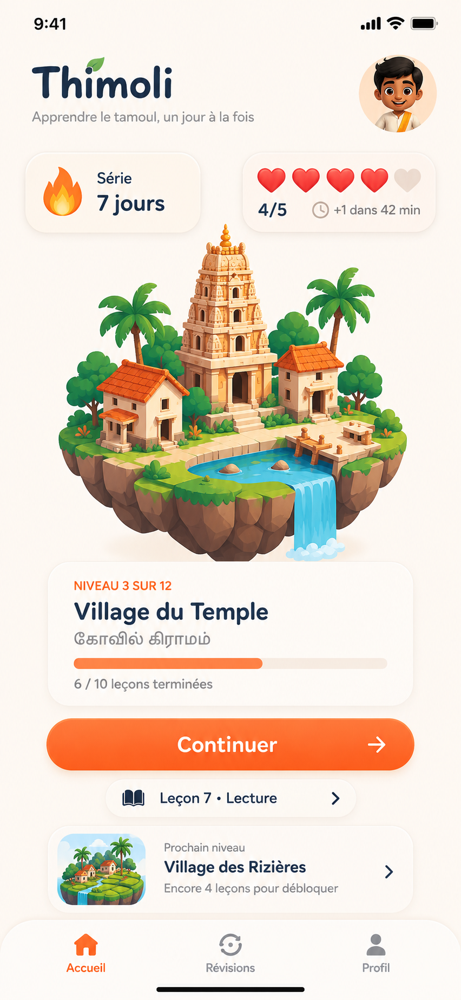
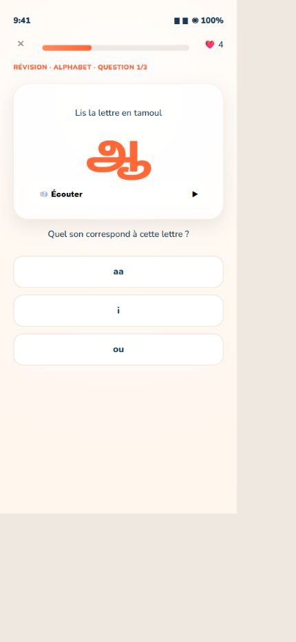
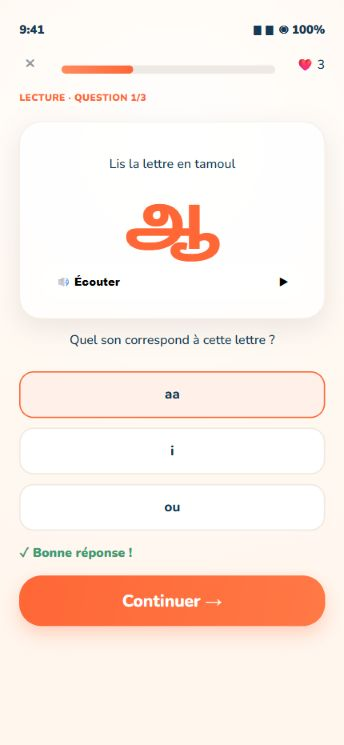
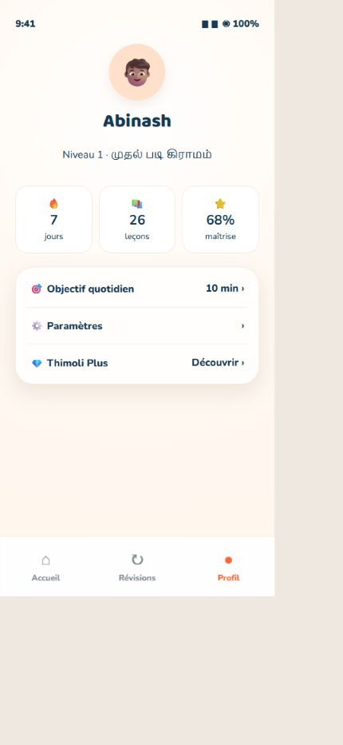
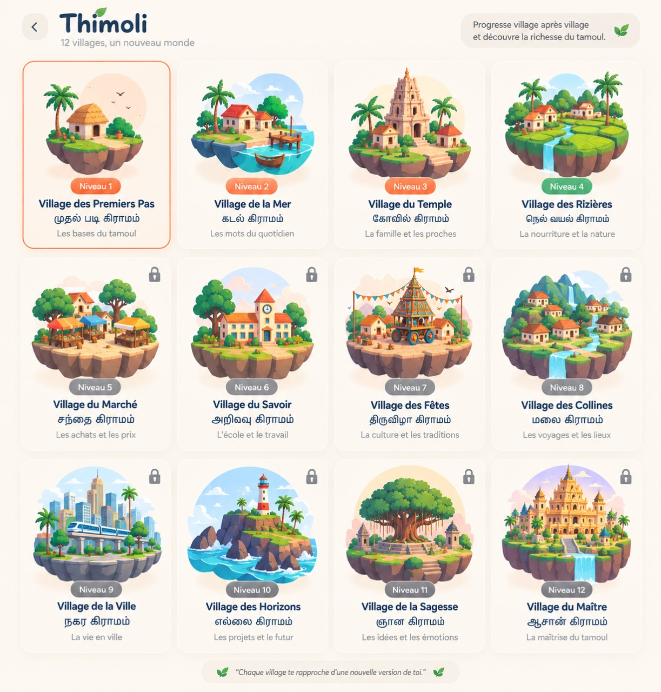

Une habitude facile
Quelques minutes suffisent pour avancer, même pendant une journée chargée.
01L’application mobile qui t’aide à lire, comprendre et parler tamoul avec des leçons courtes, des exercices concrets et une progression qui donne envie.
Conçu avec la communauté
pour celles et ceux qui veulent renouer avec leur langue.

Pas de cours compliqués ni de longues listes à mémoriser. Thimoli te montre quoi apprendre, te fait pratiquer, puis consolide ce que tu connais déjà.



Chaque leçon combine vocabulaire, écoute, lecture et répétition. Tu avances à ton rythme, sans cours interminables.
Quelques minutes suffisent pour avancer, même pendant une journée chargée.
01Écoute et pratique les mots que tu peux vraiment utiliser avec tes proches.
02Apprends à reconnaître, lire et prononcer sans te sentir dépassé.
03Chaque village ouvre un nouvel univers : les bases, la famille, la cuisine, la culture, les voyages… Plus tu apprends, plus ton monde évolue.

Beaucoup ont grandi en comprenant quelques mots sans jamais oser parler. Thimoli est né pour rendre ce chemin plus accessible, plus moderne et plus fier.
La langue tamoule ne devrait pas sembler inaccessible à la génération qui veut la retrouver.
Inscris-toi pour tester Thimoli avant sa sortie et nous aider à construire l’app dont la communauté a besoin.